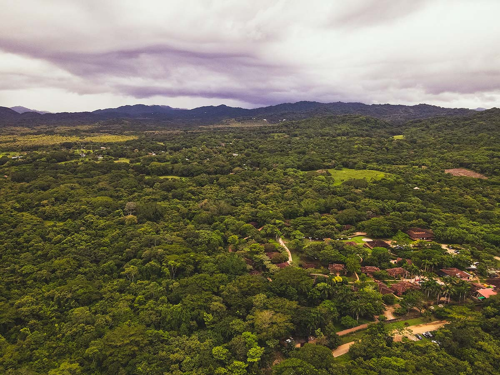
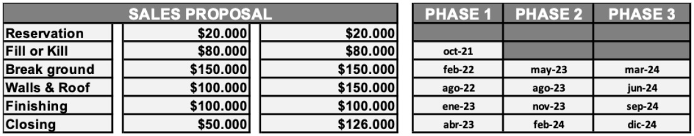
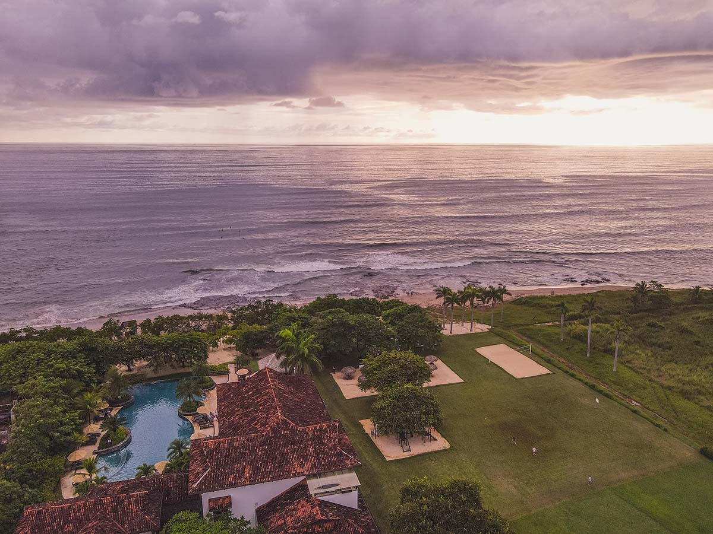
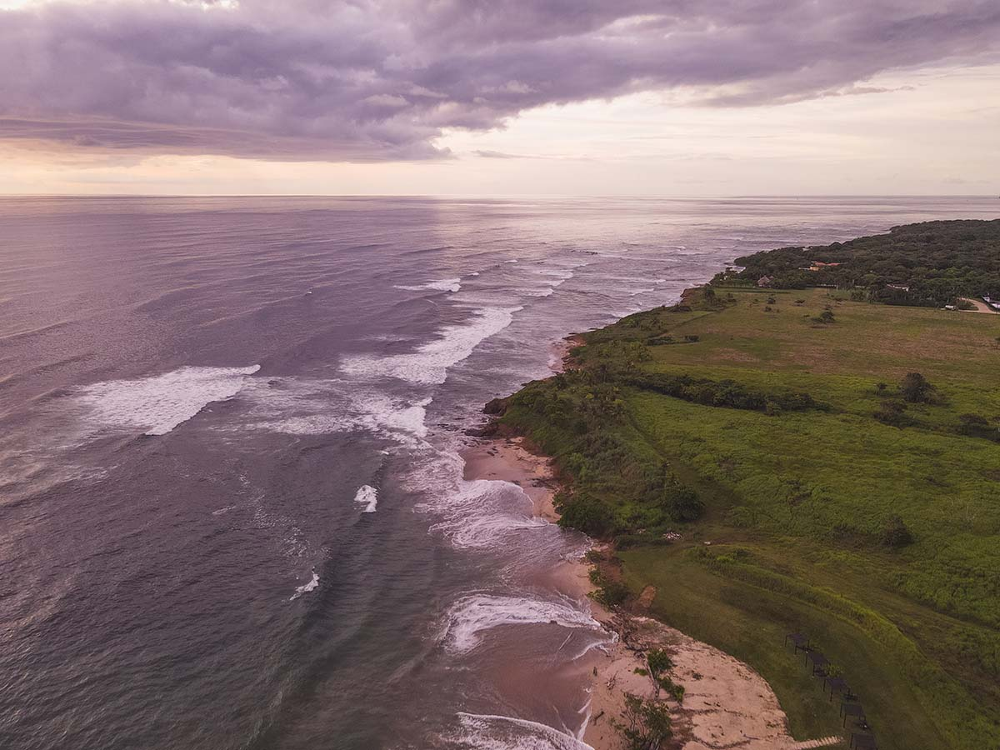
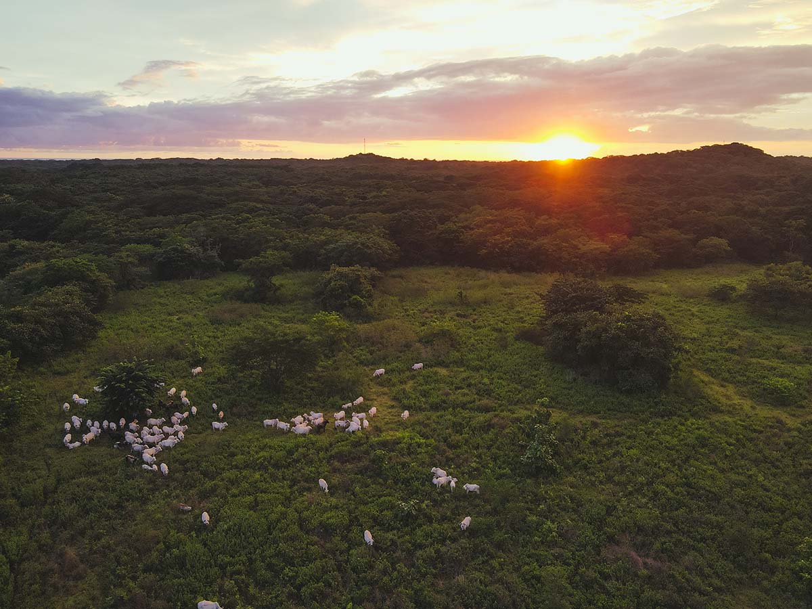

Get excited about living in Costa Rica. Pura vida!
I am so excited to share with you some updates and news regarding your new home at The Rythmia Residences. We are extremely pleased that 32 beautiful souls have purchased homes in Cielo. We are in negotiations with additional clients and believe all of the units in Cielo will be sold prior to Christmas. We are extremely pleased, to the point that we are rolling out our next phase!!!
We are beginning to clear the land and develop the infrastructure for Cielo this week! As you know, our goal was to sell 25 homes before we could begin construction. I am happy to report that you have 30 new neighbors who have chosen to be a part of this first of it’s kind plant medicine community! Stay tuned for more updates!
In the coming weeks and months we will create a self guided walking tour of the property so you can come check out the progress on your own!
Please find attached two maps - one is the new layout of the community with the added features of a Dog Park, Playground, Community Garden, Yoga Decks and Mediation Zones. In addition, you will find the latest availability map attached to this email. This map is changing daily but this will give you a snapshot of where we are as of today's writing!
Update on the second payment of $80,000. We will be sending out a formal request in the coming week for the second payment because we have surpassed our goal of 25 homes sold for the project. We anticipate Cielo will sell out completely by November. Congratulations to all of you early adopters! You are certainly ahead of the curve and should be acknowledged for your foresight. Now it is time to get to work Light Workers and Light Warriors as we build a loving community of luminaries and visionaries!
As a reminder here is the payout schedule for 2 and 3 bedroom homes:

At the time you take possession of your home, Costa Rica assesses a one time transfer fee. For a $500,000 house (2 bedroom house) the fee is $17,900.00 and for a $626,000.00 house (3 bedroom house) the fee is $22,300.00.
Annually there is a .25% property tax which for a two - three bedroom is $1,250 - $1,500 USD.
There is an additional annual luxury tax of .17% which will range between $850 and $1,050 USD depending on two or three bedrooms.
We suggest that you research the best options for homeowners insurance. We have found options between $750 - $1000 ish annually for Fire, Theft, Flood, etc. as well as contents and title insurance, if you so desire.
Stay tuned - we are putting the finishing touches on these turn key options for your new home. It looks like pricing for complete packages will be in the 60K - 70K range.
A new bill has passed the Costa Rican Legislature. Project 22.156 will reduce the minimum capital investment for Costa Rica residency from $200,000 to $150,000. With the purchase of your Rythmia Residence, you are automatically eligible to apply for residency.
In addition, the law includes incentives such as the tax-free importation of vehicles for personal or family use and a one-time tax exemption for importing household goods. People who qualify can import up to two land, air or sea transportation vehicles, for personal or family use, and an entire shipping container of household goods free of all import, customs and value added taxes.
Check out these amazing sites all within an hour of your new home! Forget about “Sunday Funday” because EVERYDAY is PURA VIDA DAY!
